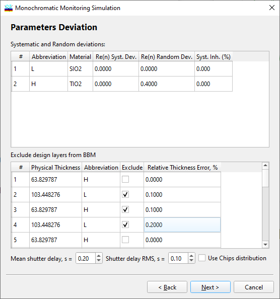

Monochromatic Monitoring Simulation - Parameters Deviations
Monochromatic Monitoring Simulation - Parameters Deviations

At the second step, it is possible to specify deviations in refractive indices of layer materials (both systematic and random) and the level of systematic inhomogeneity in the design layers. If it is necessary to consider a complicated difference in refractive index from the theoretical value, a different material can be specified from the Layer Material database for the same design abbreviation. In the middle part of the dialog, it is possible to exclude some design layers from the Monochromatic Monitoring procedure. In some cases, it may be desirable to monitor specific layers using other methods, such as by time or with the help of quartz crystal monitoring. The “RMS Relative Thickness Error” column allows for specifying the level of errors in these supplementary monitoring types. It is also possible to specify the Mean shutter delay value and Shutter delay RMS, which also affect the quality of the deposition process. See also: